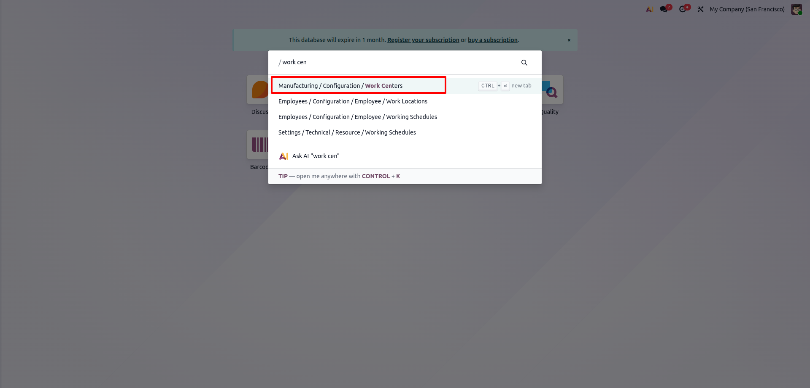
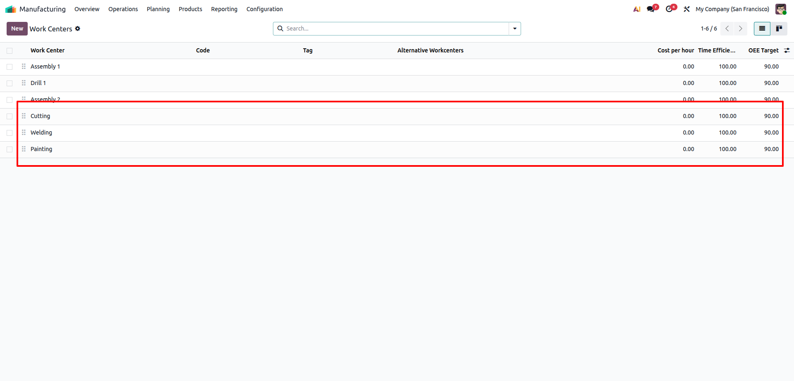
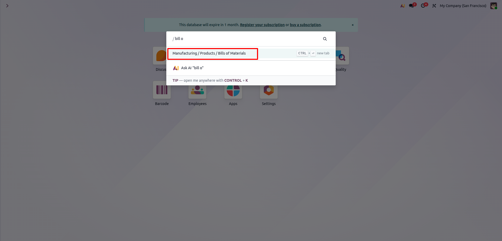
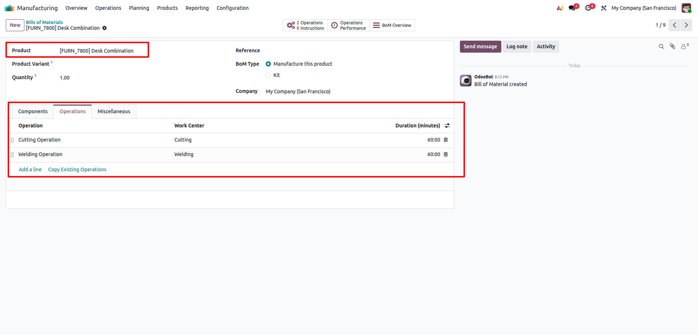
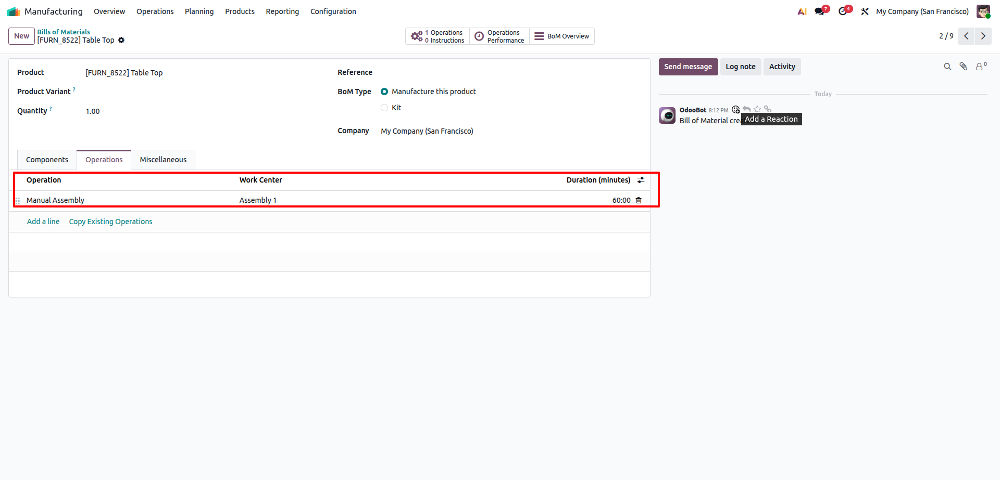
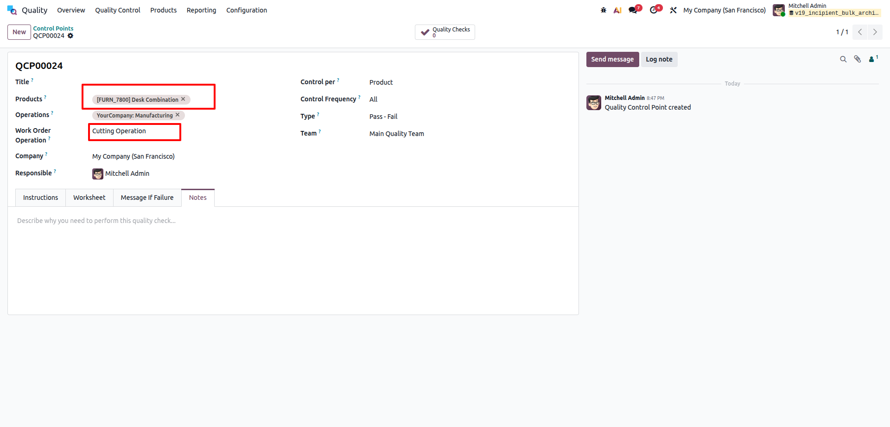
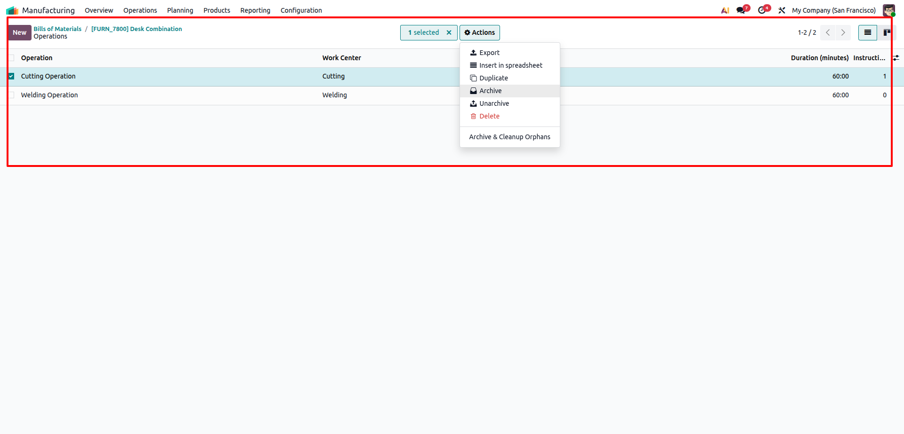
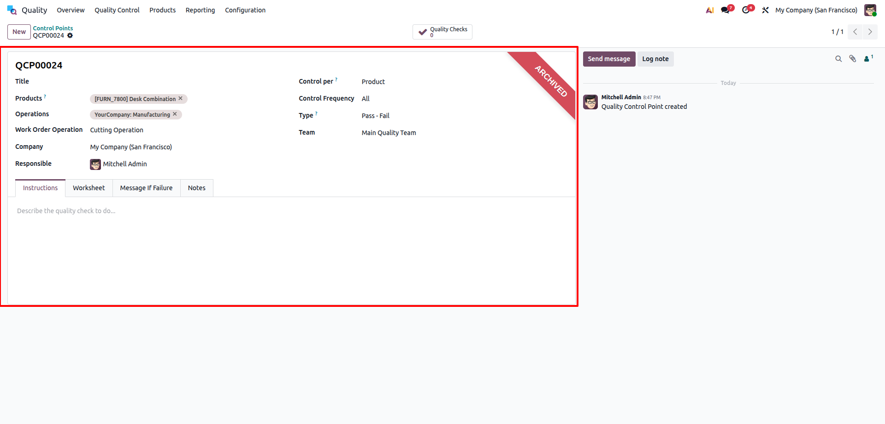

Bulk Archive Routing Operations & Orphan Cleanup
Incipient Manufacturing SuiteBulk Archive Routing Operations & Orphan Cleanup
Easily select multiple Bill of Materials (BOM) routing operations and archive them in bulk, while automatically identifying and archiving orphaned Quality Control Points for clean and synchronized manufacturing data.
Need Setup Assistance?
Free pre-sales consultation and technical support for every installation.
Contact Technical SupportBuilt for Manufacturing Master Data Control
Eliminate tedious manual record archiving and eliminate orphaned quality checks
Bulk Archiving
List View ActionDirectly select multiple routing operations across various BOMs from the list view and archive them simultaneously in seconds.
Orphan Cleanup
Automatic SyncAutomatically searches and archives all associated Quality Control Points, preventing orphaned quality checks from cluttering the shop floor.
Safety Wizard
Pre-Action ReviewDedicated popup wizard displays all selected operations and a clear warning prompt before executing the archive operation.
The Business Transformation
How Bulk Archive Routing Operations & Orphan Cleanup solves standard Odoo manufacturing maintenance challenges
Default Odoo Limitation
- ✕ Engineers must open each routing operation individually to archive it, wasting hours during routine production maintenance.
- ✕ Quality control points linked to archived operations remain active, becoming orphaned and triggering confusing quality checks.
- ✕ No unified validation or warning mechanism exists to confirm cascading impact on associated quality checkpoints before archiving.
Automated Master Data Cleanup
- ✓ Select multiple routing operations directly from the list view and trigger batch archiving in a single click from the Action menu.
- ✓ Intelligently searches and archives all linked quality points simultaneously, eliminating orphaned records and shop floor errors.
- ✓ Interactive safety wizard clearly displays all targeted operations and includes an explicit warning banner prior to execution.
Comprehensive Feature Suite
12 Core capabilities engineered for seamless manufacturing routing and quality maintenance
Batch Operation Archiving
Select multiple routing operations across various BOMs and archive them concurrently with a single action.
Automated Orphan Quality Cleanup
Automatically identifies and deactivates linked Quality Control Points, preventing orphaned quality checks on shop floor orders.
Direct Action Menu Binding
Seamlessly bound to the standard Odoo list view Action menu for Routing Workcenters (`mrp.routing.workcenter`).
Safety Confirmation Modal
Opens a focused popup wizard allowing users to inspect the selected operations list before confirming changes.
Clear Warning Indicators
Displays a prominent alert banner warning users about the cascading archiving of associated quality control points.
Read-Only Tags Preview
Renders the chosen operations in intuitive badge tags, ensuring users have full clarity on which records are targeted.
Preserves Production History
Uses standard Odoo active-state deactivation (`active=False`), preserving all historical manufacturing orders, work logs, and analytics.
Optimized Batch Performance
Leverages efficient ORM batch queries and writes, ensuring fast execution even across large routing databases.
MRP & Quality Module Native
Fully integrates with standard `mrp_workorder` and `quality_control` modules without schema overrides or conflicts.
Zero Initial Configuration
Ready to use immediately upon installation with no complex configuration settings or parameters required.
Edition & Cloud Ready
Fully compatible with Odoo Enterprise Edition, Community Edition, and Odoo.sh cloud hosting environments.
Generic & Clean Architecture
Clean routing-maintenance and cleanup mechanism with no hardcoded dependencies or external third-party libraries.
Step-by-Step Visual Walkthrough
How Bulk Archive Routing Operations & Orphan Cleanup operates in Odoo
Navigate to Work Centers
Use the command search bar or menu navigation to go to Manufacturing > Configuration > Work Centers.
Quickly locate the work centers configured for operations in your manufacturing flow.

Review Work Centers Master List
View all available work centers (such as Cutting, Welding, and Painting) in the work centers list view.
Identify the work centers utilized across various Bill of Materials routing steps.

Navigate to Bills of Materials
Search or navigate to Manufacturing > Products > Bills of Materials to access your product BOMs.
Open the desired Bill of Materials to review and manage routing operations.

View Operations on Bill of Materials
Open a Bill of Materials (e.g. Desk Combination) and click the Operations tab to see configured routing operations.
Review operations like Cutting Operation and Welding Operation linked to respective work centers.

Inspect Other Product BOM Operations
Navigate across other Bill of Materials records to check their configured routing steps and work center dependencies.
Ensure full visibility into operations before executing bulk archival and cleanup.

Linked Quality Control Point Active State
In Quality Control Points, observe the active Quality Control Point linked to the product and routing operation.
This quality point is currently active before running the orphan cleanup wizard.

Select Operation & Run Archive & Cleanup Orphans
In the operations list view, select the target operation(s), click the Actions menu, and select Archive & Cleanup Orphans.
The wizard archives the selected routing operation and automatically searches for and cleans up all associated quality points.

Automatic Orphan Cleanup & Archival Verified
Check the linked Quality Control Point to see it now marked with the ARCHIVED ribbon automatically.
Both the routing operation and its orphaned quality points are archived cleanly, preventing dangling records in manufacturing.

Frequently Asked Questions
Click any question below to expand or collapse details